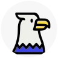

Getting started with Raptor
What is Raptor?

Raptor1 is a modern, fast, and easy-to-use system for building disk images, bootable isos, containers and much more - all from a simple, Dockerfile-inspired syntax.
It uses systemd-nspawn for sandboxing when building or running containers.
Start by installing raptor, then head over to the Debian Liveboot walkthrough to get a hands-on introduction to building a bootable iso.
Theory of operation
Raptor builds layers from .rapt files. If you are familiar with Docker,
this is similar to how Docker builds containers from a Dockerfile.
# scale = 0.8
fill = white
All: [
[
file
file at previous + (0.1,-0.1)
file at previous + (0.1,-0.1) "Raptor" "source" "code"
]
arrow "Raptor build" above width 1
Layers: [
file
file at previous + (0.1,-0.1)
file at previous + (0.1,-0.1) "Layers"
]
#cylinder \
# wid Layers.width + 0.2 \
# ht Layers.height + 0.4 \
# at Layers \
# fill 0xc6e2ff \
# behind Layers
#text "Disk storage" at previous.t + (0, 0.1)
]
box \
wid All.width + 0.2 \
ht All.height + 0.2 \
at All \
fill 0xd0f0ff \
behind All
# fill 0xc6e2ff \
However, Raptor has a different scope, and can do considerably different things than Docker.
The entire Raptor project, including this book, the program itself, and the companion project raptor-build, is still quite young.
If you find (or suspect) any bugs, please report them so everybody can benefit.
At this point, Raptor has reached a stage where breaking changes are rare, but we don’t yet make any particular guarantees. We will try our best to announce major changes clearly, and ahead of time.
If you have questions, ideas or feedback, don’t hesitate to join the discussion.
Syntax
Raptor uses a syntax similar to Dockerfile. Statements start with uppercase
keywords, and are terminated by end of line.
All lines starting with # are treated as comments:
# This copies "foo" from the host to "/bar" inside the build target
COPY foo /bar
Raptor files
Before being parsed as raptor files, .rapt files are processed through
minijinja, a powerful templating
language.
-
According to wikipedia: “The word “raptor” refers to several groups of avian and non-avian dinosaurs which primarily capture and subdue/kill prey with their talons.“. Hopefully, this Raptor is less scary. ↩